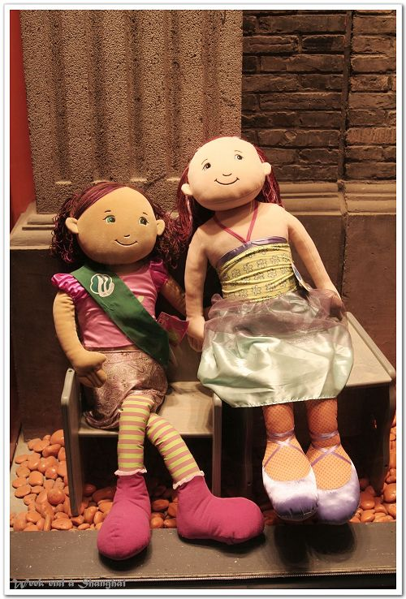
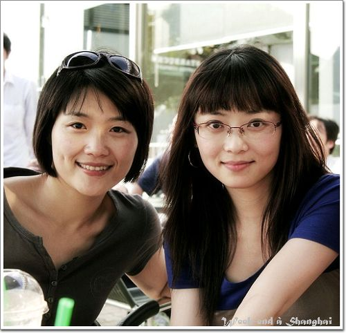

油价又涨了 @ Jun 20, 2008
姐夫发来短信说明天油价可能会涨，晚上把油箱加满吧。
昨天晚上每个加油站等待加油的车排着长龙，要么加油站暂时关闭。
今早上听说93#油价涨到5.94，97#涨到6.28。
那些加油站的工人唠唠叨叨的：“有人就加100块钱的油，还有加几十块钱的，还是今天加完以后就不加油了...”这里面不乏宝马之类的高档车，无论穷人还是富人，全世界人民都喜欢占便宜，通性。
姐夫发来短信说明天油价可能会涨，晚上把油箱加满吧。
昨天晚上每个加油站等待加油的车排着长龙，要么加油站暂时关闭。
今早上听说93#油价涨到5.94，97#涨到6.28。
那些加油站的工人唠唠叨叨的：“有人就加100块钱的油，还有加几十块钱的，还是今天加完以后就不加油了...”这里面不乏宝马之类的高档车，无论穷人还是富人，全世界人民都喜欢占便宜，通性。
充实的工作了一整天，几乎80%都是和价格有关。
想到“生命诚可贵，爱情价更高”，这句仿佛在谈精神又的确谈到了“价”格？
在日新月异的涨价时代是否什么都可以抛？
这时代有不涨价的东西吗？
涨价是复杂的数学题，复杂意味着不纯粹不单纯...
接着咋就想到“这时代还有纯洁的婚姻吗？”
越是那些表面看似完美的，虚假的成份却更多。
粉饰得越好越不是他/她说的那样。
真可谓：外面的自己做着大众认可的事儿，里面的自己却总在背道而弛。
谁真正有权利站在道德的审判席上指手画脚？你？你？还是你？
想爱就去爱吧，不必那么虚伪。
公司选了我拍摄的三张照片到集团参加展览，洗出来的色彩与我在电脑上看到的不同，效果必然会不同，而且用的是白底板，如果是黑色的可能会好一些。兄弟公司有个人摄影作品真是狂好，据说是南艺毕业的，在企业里搞样宣，用的都是公司配备的高档设备，羡慕啊~所有展出的作品都放在大厦走廊里，同时还有一些书画作品，相信还有高手没参加这次活动，所以给了我这种爱好者展示的机会。通过看展览反省自己目前还做不到有条理的管理自己拍下的照片，这个特别需要改进。
我最喜欢的是这幅照片，它包容着丰富深沉的情绪，每每看久了都会很着迷PP中的氛围。
没想到会有知音，被选中拿去参展。

1、《恋爱中的犀牛》
忘掉她，忘掉你没有的东西，忘掉别人有的东西，忘掉你失去和以后得不到的东西，忘掉仇恨，象犀牛忘掉草原，象水鸟忘掉湖泊。忘掉是一般人能做到的唯一的事。但是，我决定不忘掉她。
2、《艳遇》
顾客永远是对的；员工永远是错的；老板永远是好的；薪水永远是低的；工作永远是幸福的；加薪永远是幸运的；看着别人被炒鱿鱼，永远是幸灾乐祸的。
3、《镜花水月》
有一种爱情现在就象纯净的空气，越来越稀有了。
4、《女人说相声》
恋爱是病？
全世界最严重的病。
没错，之前越快乐，之后就越痛苦。这就是恋爱病的特性。
5、《两只狗对生活的意见》
我闭上眼睛再睁开眼睛，一天已经过去了。如果我闭上眼睛，不再睁开眼睛了，我这辈子也就过去了。
6、《琥珀》
现在你是我的。现在爱情和痛苦和劳作都应该入睡。黑夜转动它那看不见的轮子，你在我身边纯洁如一枚入睡的琥珀。
7、《如影随行》
我必须承认我卡住了，我在一个奇怪的地方，只能叫这个地方“之间”。什么之间？我不知道。死亡和投胎之间，睡着和睡醒之间，吃饭和吃饱之间，幻想和停止幻想之间，日日夜夜之间，春夏秋冬之间，吸气吐气之间，被人创造跟被人遗弃之间，在虚空中流浪和等待被发现之间......反反复复，直到永远！
8、《暗恋桃花源》
一切都停止了，这夜晚停止了，那月亮停止了，那街灯，这个秋千，你和我，一切都停止了。
离开温暖舒适的家，人往往可以遇到另外一个自己。
令人心声启迪的Elizabeth Gilbert，一个三十四岁的离婚女子，回首来时路，怅然若失。她撰写的《Eat, Pray, Love》，荣获时代杂志2008百大最有影响力的人物，雄踞2007年全美年度畅销排行榜第三名，连前美国第一夫人希拉里-克林顿对它都青睐有加。超过在美国大热的《灿烂千阳》、《追风筝的人》和《大象的眼泪》。
懂得放弃和改变的女人，即使我们不再漂亮，不再年轻，仍然可以一辈子做女孩！作者Elizabeth Gilbert在小时候有个梦想：长大后会是儿女成群的妈妈。但在30岁以后，她才发现自己既不想要小孩，也不想要丈夫。在令人疲惫的婚姻结束之后，作者在意大利、印度、印尼三个不同国度之间寻找自己，Elizabeth离开纽约只剩下自己一个人的“家”，在意大利，她的灵魂再生；在印度，她洗涤了混乱的身心；在巴厘岛，她寻得了身心的平衡。这一年的流浪，让她发现“拯救我的人，并非王子，而是我自己操控我，拯救我”。
社会学家李银河说：“女人首先是一个人，其次才是一个女人。我认为本书的作者写出了女人的心声。越来越多的女人会认识到：女人有自己独立于男人的价值。”相信她会找到自己的家，无论它在哪里。
作者简介：伊莉莎白·吉尔伯特，小说家、新闻记者、两度获得National Magazine Award 深度报导奖，作品The Last American Man 入选美国国家图书奖决赛名单及2002年纽约时代年代好书，故事集Pilgrims获得Paris Review 最佳新人小说等奖项。曾为知名杂志GQ、Bazaar、The New York Magazine撰稿。
这个城市进入梅雨季节了，下着绵柔的阴雨，城市被洗刷成干净透明的灰色。
穿梭于这个城市，心就这么忽然被刺痛了，那些悲伤过的悲伤，困扰过的困扰，那些纠缠过的纠缠，不会再被刺痛的刺痛...无缘由的在雨季猛烈地摇晃着你所有纤细的神经...逃亡式的奔走于黑夜伴着王若琳的《迷宫》 。这个城市究竟是幸福还是悲伤的？
旧式的传统女人，是煎好的荷包蛋，失去了壳也失去本来的形状，安分守己的任君享用。新式的现代女人，则是水煮蛋，没有去壳也保留住自己的原来的形状，让男人往往心力交瘁，难以掌握。性急的某些男人于是发火了，忘记了自己原来是要与女人相爱，与女人建立关系的，他们想把女人控制住，女人若想逃跑，便与女人为敌，直到踩碎或者嚼碎她们。比较可惜的是，王蓝田到最后始终没有品尝到鸡蛋的好滋味；某些男人，也无法了解被女人深深爱着是怎样的幸福。（张曼娟）
夜，已深。
还有谁在与中国茶相伴？
15 Jun 2008 00:35:43 vivian的且行且纪
心有猛虎，细嗅蔷薇。盛宴之后，泪流满面。
15 Jun 2008 00:00:09 82.67.246.38 ram94-1-82-67-246-38.fbx.proxad.net
http://www.baidu.com/s?wd=Chinese+tea
丢了Te Cinese，丢了Chinese tea，丢了lifetea...自己已经找不回来了？
这两个娃娃较成人化，做的也不是那么的唯美，倒显得真实可爱。
从小不太喜欢布娃娃的我却被吸引在橱窗外，拍下她们暖暖的友谊。

微笑的肌肉从什么时候开始僵硬的？
谁也不知道。那部分肌肉需要锻炼啦。

孕妇MM说有一天她在路上看到一只西瓜瓢虫和一只苍蝇遇见，都不往前走，就这么对望着...“哦，两个外国人相遇了。”我说。孕妇MM为此暗自乐呵了好几天，其实70年代人和80年代人，似乎也有点外国人相遇的感觉？！
孕妇MM于5月19日顺产了一位健康的公主，每次去都只能看到她的侧面。

不知道是受了什么的影响，从青春期开始我就喜欢听好听的话。
妈妈常说：“你就喜欢听别人说好听的，所以你很容易上当受骗。”
有个80年代的小丫头以前常对我说：“你真呆，你怎么怎么.....你真呆...”
我的确没有看上去那么聪明，如果正处于爱情和友谊，情况就更糟啦。
现在想来也许天生爱幻想，加上从小喜欢看文学书，渐渐喜欢天马行空不切实际，待人看事，总把对方想的很好，考虑问题、做起事来也就简单直接。这么看，我似乎应该是个浪漫的乐观派？
回望过去十年，所有的人和事都不是想象的那样，而我的心理发育总是滞后于生理发育，我把一切想的很好，或者说期望的很好，正常状态下只一件事，你便了解真实，爱情和友谊中却需要经历N件事才愿意承认。
听到有人说以后我会如何如何，我会怎么样怎么样，这些事情不是这样是那样的，是别人怎么怎么......空洞的许诺和推卸责任一样都是屁话，原谅，意味着你违背了自己的原则，同时又给了对方再次伤害自己的机会。不要听他/她说了什么，而要看他/她做了什么。语言其实挺....用北京话讲叫“不靠谱”，用南京话讲叫“不上路子”。
行胜于言，永远是真理。
呆人，总会有呆福自己撞上门来~
难忘姐姐家吃的晚饭。
红烧青蛙、清炒菊叶、膳片炒洋葱各一盘，盐水河虾和一碗西红柿蛋汤。
青蛙里加了某种十三香调料，麻辣鲜十足。姐姐家楼下的菜场到傍晚会有人来卖青蛙，一盘青蛙姐姐跑了三趟才买到，除了青蛙个头小以外口味和沸腾鱼乡的谗嘴蛙有的一拼。姐夫烧的西红柿蛋汤，金灿灿的，好看又好喝。以后要学着烧成这样的口味。
有一天比较饿，在家里翻看烹饪的书，128种大众菜肴做法，越看越有意思，发现自己对于美食还是颇有兴趣的。